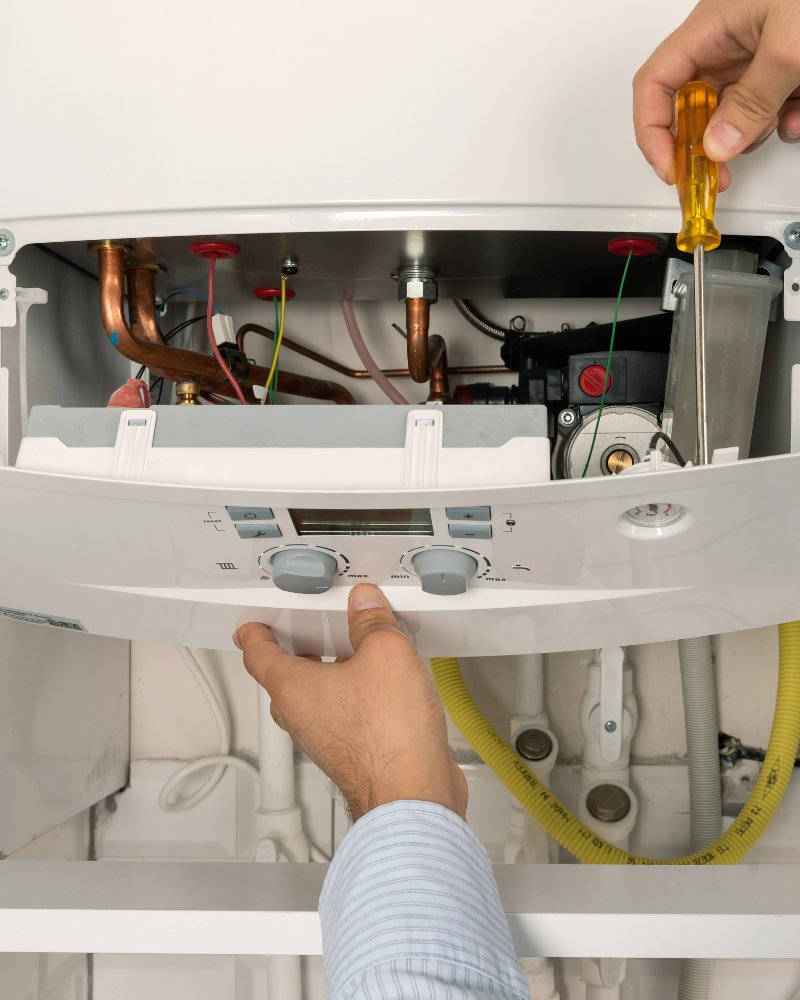

Whether your boiler has broken down, is losing pressure, or is due its annual service, City Plumbing Services covers all makes and models across Greater Manchester. We've been keeping Manchester homes warm since 2009.
Boilers give warning signs before they fail completely — strange noises, dropping pressure, slow heat-up times, error codes on the display. Ignoring those signs usually means a more expensive repair further down the line. Getting a Gas Safe engineer in early often means the difference between a straightforward fix and a full replacement.
Our engineers carry extensive knowledge of the major boiler manufacturers and stock a wide range of common spare parts. In many cases we can diagnose and repair the fault in a single visit. We work on Worcester Bosch, Vaillant, Baxi, Ideal, Glow-worm, Potterton and most other makes found in Manchester homes and commercial properties.

A clear process so you know what to expect from start to finish.
The engineer carries out a full assessment — checking pressure, the flue, the heat exchanger, controls and any error codes. You'll be told exactly what the problem is before any work starts.
Once the fault is confirmed, we identify the parts needed. Many common components — pumps, diverter valves, pressure relief valves, PCBs — are stocked on our vans or can be sourced quickly.
The repair is completed to manufacturer standards. For a service, we clean internal components, check the flue for safe operation, test combustion and inspect seals and joints throughout.
Before we leave, the boiler is run through a full test cycle. We check flow temperatures, pressure, the thermostat response and make sure heating and hot water are both working correctly.
Most boilers have a lifespan of 10 to 15 years if they're properly maintained. Without an annual service, performance drops off, efficiency falls and faults are more likely — and when those faults go undetected, they can lead to dangerous situations. Carbon monoxide, for instance, is produced when gas doesn't burn cleanly. It's colourless, odourless and potentially fatal. A properly serviced boiler with a clean flue and good combustion dramatically reduces that risk. That's why a gas safety check and annual boiler service isn't just about keeping the heating working — it's genuinely important for your household's safety.
Common boiler faults we deal with in Manchester include loss of pressure (often caused by a small leak somewhere in the system, a faulty pressure relief valve, or the need to repressurise the expansion vessel), no hot water despite heating working fine (usually a faulty diverter valve in a combi boiler), and the boiler firing but not reaching temperature (often a pump or heat exchanger issue). Error codes vary by manufacturer — Worcester Bosch, Vaillant and Baxi all use different code systems — but our engineers are familiar with them across all major brands and can interpret them accurately without guessing.
Pilot light issues are worth mentioning separately. Modern boilers use an electronic ignition rather than a standing pilot light, but older models still have one. If the pilot light keeps going out, it's usually a faulty thermocouple — a relatively straightforward repair. If it won't stay lit at all, there may be a gas supply issue or a fault with the gas valve, both of which need a Gas Safe engineer to investigate. Do not attempt to keep relighting a pilot light that repeatedly goes out without finding the underlying cause.
For homeowners, we strongly recommend booking a boiler service once a year. Early autumn — before the heating season — is a sensible time to do it. That way, if there is a fault, it's found and fixed before you really need the heating. Many boiler manufacturers also require evidence of annual servicing to keep the warranty valid, so it's worth keeping a record of service visits.
For landlords, a boiler service forms part of your wider gas safety obligations (more on that on our landlord services page). We offer a regular service schedule that takes the admin out of it — we'll get in touch when your next service is due and arrange a visit at a time that works for you and your tenants. We cover individual properties as well as larger portfolios.
City Plumbing Services is Gas Safe registered (registration number 000000). This is a legal requirement for anyone carrying out work on gas appliances in the UK — it means our engineers have been assessed, trained and certified to work safely on gas. You can verify any engineer's Gas Safe registration at gassaferegister.co.uk. We'd always encourage you to check, whoever you're using.
Once a year is the standard recommendation — and the requirement for landlords. For homeowners, annual servicing keeps the boiler running efficiently, catches small faults early and is typically required to keep the manufacturer's warranty valid. If your boiler hasn't been serviced in two or more years, it's worth getting it done sooner rather than later.
Pressure loss usually means there's either a small leak somewhere in the system (which might not be obvious — it could be under floorboards or behind a wall), a fault with the pressure relief valve, or the expansion vessel needs attention. Repressurising the boiler yourself via the filling loop is a temporary measure — if it keeps dropping, the underlying cause needs to be found and fixed.
Yes. Our engineers are experienced with Worcester Bosch, Vaillant, Baxi, Ideal, Glow-worm, Potterton, Viessmann and most other makes found in UK homes. We carry parts for many common models, which means fewer return visits and faster repairs.
A full service includes a visual inspection of the boiler and flue, cleaning of the burner and internal components, a flue gas analysis to check combustion efficiency, checks on seals, joints and safety devices, a test of the controls and thermostat, and a check of the system pressure. You'll receive a service record at the end.
Annual CP12 certificates for landlords — legal requirement under UK law. We cover single lets, HMOs and multi-property portfolios, with certificates issued the same day.
Learn MoreNew central heating systems, radiator upgrades, power flushing, smart thermostats and underfloor heating — planned and installed by our experienced heating engineers.
Learn MoreBoiler broken down unexpectedly? We take emergency call-outs across Manchester 24 hours a day, 7 days a week — including weekends and bank holidays.
Learn More